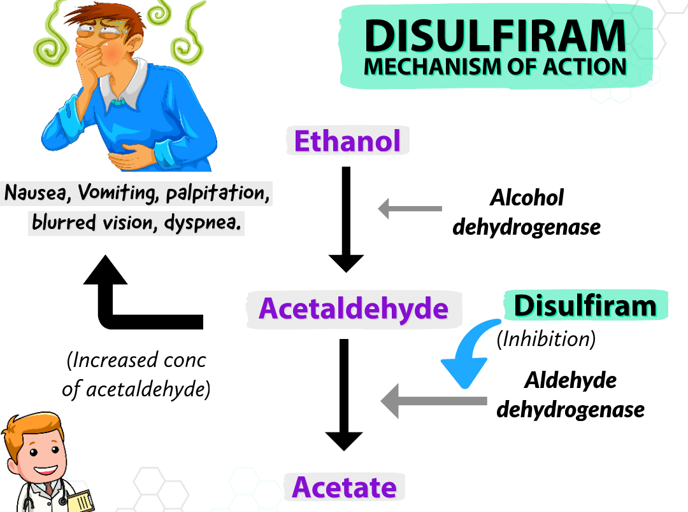

Gabapentin
Baclofen
Topiramate
Ondansetron
Acamprosate
Buprenorphine
Naltrexone
Methadone

Dislfiram is an aversive agent. Used for Alcohol Use Disorder. Buildup of acetaldehyde causes unpleasant symptoms - the disulfiram-ethanol reaction. Other drugs causing Disulfiram like reactions - Metronidazole, Nitrofurantoin, Sulfonylurea, Griseofulvin, some cephalosporins.
DER: Flushing,
Headache,
Nausea and vomiting,
Sweating,
Chest pain,
Rapid heartbeat,
Low blood pressure,Syncope,
Difficulty breathing,
Mental confusion.
In rare cases, the disulfiram-ethanol reaction can be life-threatening, with symptoms including seizures, coma, and respiratory failure.Can happen upto 2 weeks after last dose. Depends on blood alcohol level. 5-10mg/100ml - mild. 50 - severe. 125-150 unconsciousness. Mx mostly symptomatic after discontinuation of Disulfiram.
Metabolized partly hepatic. Renalexcretion. T1/2:60-120 hours. Initial dose - 250-500mg/day for 1-2 weeks. Maintainance mostly 250. Patient should not take it till atleast 12 hours after last consumption pref- a week. Informed consent. LFT. C/I in renal/hepatic/Cardiac impairment/Elderly.
S/E: Hepatotoxicity, MI, CCF, Resp. Depression,Headache, impotence, metllic tate, rashes, optic neuritis, edema, wt gain, pychosis. Category C. Excreted in breast milk.